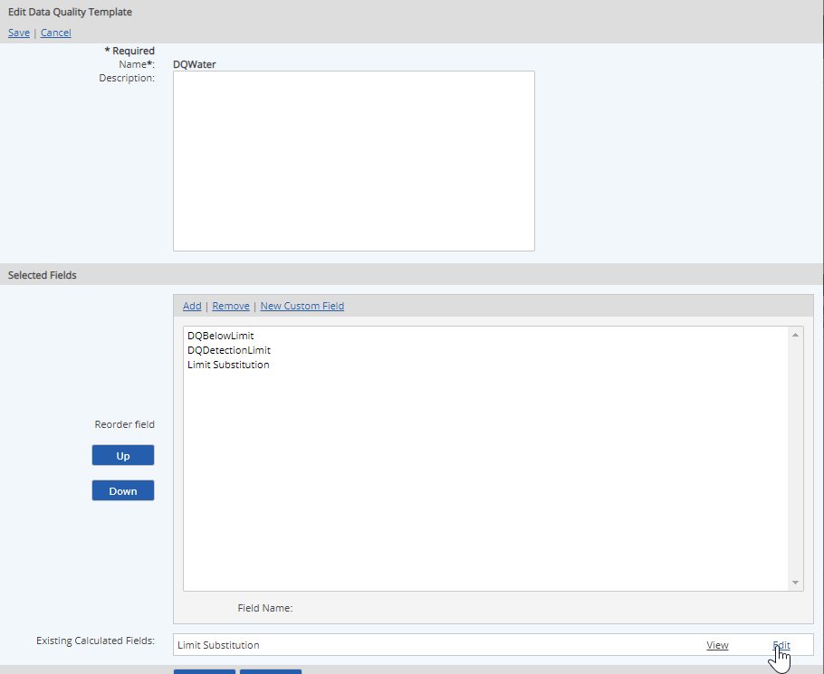
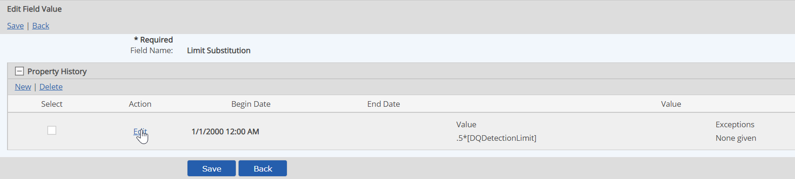
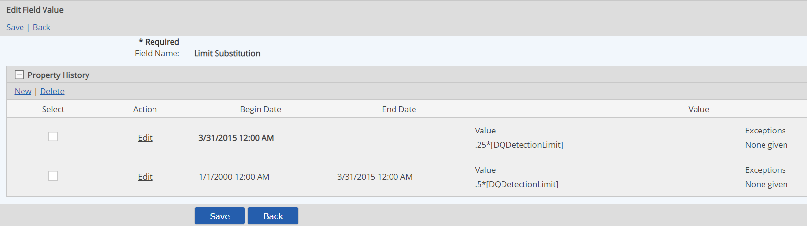

You can create new versions of a calculated numeric field when calculation requirements change. In this way, using the same field you can apply one calculation for one time period, and a different calculation for another time period.
To change the calculation formula, the formula value must be edited on the template that contains the field. The default calculation, which may be edited from the Custom Field Library, serves only as an aid when adding the field to a template. Editing the default calculation from the Custom Fields Library has no effect on the calculation defined on the template.
To create a new version of a calculated numeric field:
At the bottom of the form, find the Existing Calculated Fields table. Select Edit for the field you want to edit.

The current calculation definition is shown as the Last History Item.
Click the plus sign (+) to expand the Calculation Definition panel to view the value history.
You must first assign an end date for the current value before you can create the new value.
Select Edit for the current value.

Enter an End Date for the value history, then click Update.
Click New to add a new formula value.
Define the new calculation formula value and select a Begin Date for using the new formula.
Select Update.
The new formula history is displayed.

Click Save, then Confirm to save the calculation formula change.
You are returned to the Calculation Template properties.
The calculation history for a calculated numeric field is specific to the template. If the field is used in more than one template, different versions may exist for each template. To change the value for other template applications, you must edit each template.